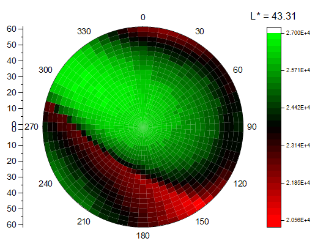

極座標ヒートマップ
Polar-Heatmap

要求されるデータ
- ワークシート：XY列またはXYZ列（全範囲または部分範囲）、または仮想行列を選択します。
または
- 行列：1つの行列シート。複数オブジェクトを含むシートがサポートされています。
グラフ作成
行列シートをアクティブにするか必要なデータをワークシート上で選択します。
XYデータから極座標ヒートマップを作成すると、plot_heatmapxyダイアログが開きます。
XYZデータから極座標ヒートマップを作成すると、plot_heatmapxyz ダイアログが開きます。
Zを含まない複数のY列から極座標ヒートマップを作成すると、plotvm ダイアログが開きます。
テンプレート
PolarheatmapMat.otpu
(Originのプログラムフォルダにインストールされています。)
ノート
極座標ヒートマップはヒートマップと似ていますが、極座標にプロットされます。
- 作図>等高線：極座標ヒートマップ θ(X)r(Y)を選択すると、Xファンクションダイアログplot_heatmapxy、plot_heatmapxyz、plotvmでラベルのすべてのXおよびYがθ およびRに変更されます。
- ソースZ列または行列にRGB値を持つ極座標ヒートマップを作成することができます。